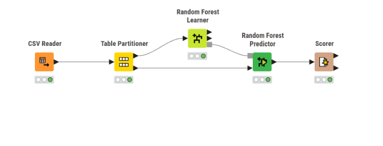
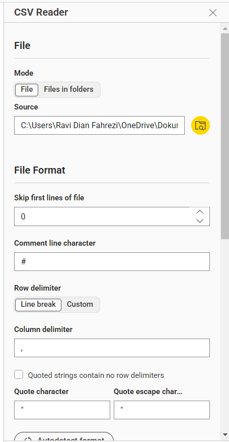
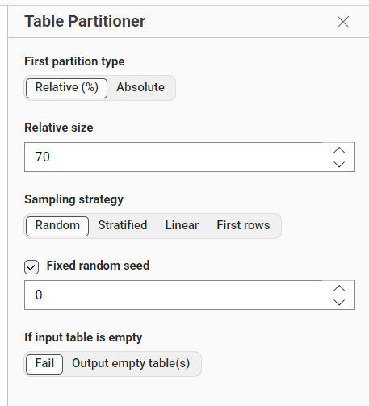
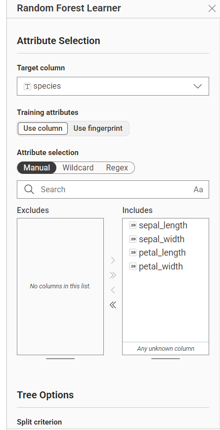
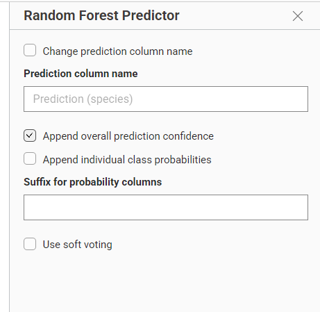
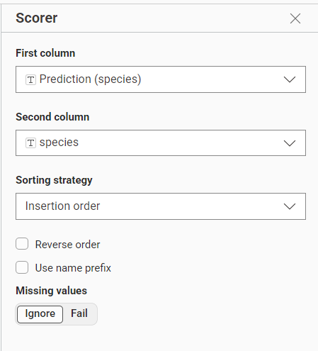
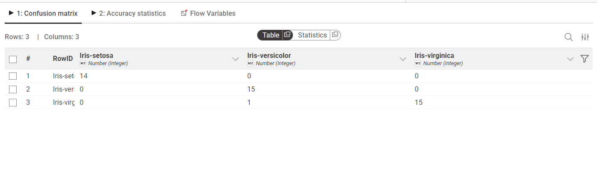

Pertemuan 12#
Random Forest#
1. Pengertian Random Forest#
Random Forest adalah salah satu algoritma machine learning berjenis ensemble learning yang digunakan untuk tugas klasifikasi dan regresi. Algoritma ini bekerja dengan cara membangun banyak Decision Tree (pohon keputusan) pada saat fase pelatihan (training), dan kemudian menggabungkan hasil prediksi dari semua pohon tersebut untuk menghasilkan keputusan akhir yang lebih akurat dan stabil.
Berbeda dengan satu Decision Tree yang rentan terhadap overfitting, Random Forest mengatasi masalah ini dengan menciptakan keberagaman di antara pohon-pohon yang dibangunnya. Pada masalah klasifikasi bunga Iris, keputusan akhir diambil berdasarkan mayoritas suara (majority voting) dari seluruh pohon keputusan.
2. Konsep Dasar Random Forest#
Random Forest bergantung pada dua konsep utama, yaitu Bagging (Bootstrap Aggregating) dan Feature Randomness.
Bagging: Algoritma mengambil beberapa sampel acak dari dataset utama dengan pengembalian. Setiap sampel digunakan untuk melatih satu pohon.
Feature Randomness: Saat membagi node, Random Forest hanya memilih dari subset atribut yang dipilih secara acak, bukan dari seluruh atribut yang ada.
3. Struktur Random Forest#
Struktur utama pada Random Forest terdiri dari:
Forest (Hutan): Kumpulan dari banyak Decision Tree independen.
Individual Trees: Setiap pohon dibangun menggunakan sampel data dan subset atribut acak.
Voting Mechanism: Proses akhir di mana setiap pohon memberikan “suara”, dan kelas dengan suara terbanyak dipilih sebagai output.
4. Kelebihan Random Forest#
Mengurangi risiko overfitting secara signifikan.
Memberikan tingkat akurasi yang lebih tinggi dan stabil.
Mampu menangani dataset dengan dimensi tinggi (banyak fitur).
Tangguh terhadap data yang hilang (missing values).
TUGAS#
Laporan Proyek: Klasifikasi Random Forest Menggunakan KNIME#
5. Deskripsi Proyek#
Proyek ini bertujuan untuk membangun model klasifikasi menggunakan algoritma Random Forest pada platform KNIME. Dataset yang digunakan adalah dataset Iris untuk mengklasifikasikan spesies bunga berdasarkan ukuran kelopak dan mahkotanya.
Kolom target: species (Iris-setosa, Iris-versicolor, Iris-virginica).
6. Visualisasi Workflow#

Gambar 1. Workflow klasifikasi Random Forest secara keseluruhan di KNIME.
Langkah-Langkah Pembuatan Workflow#
7. Membaca Data Menggunakan CSV Reader#
Node: CSV Reader
Fungsi: Membaca dataset Iris format CSV ke dalam KNIME.

Gambar 2. Konfigurasi CSV Reader untuk mengimpor dataset Iris.
8. Membagi Data Menggunakan Table Partitioner#
Node: Table Partitioner
Fungsi: Membagi data menjadi 70% data latih (training) dan 30% data uji (testing).

Gambar 3. Konfigurasi pembagian data 70/30 dengan sampling Random.
9. Membuat Model Menggunakan Random Forest Learner#
Node: Random Forest Learner
Fungsi: Melatih model dengan membangun kumpulan pohon keputusan berdasarkan data latih.

Gambar 4. Konfigurasi Learner dengan target kolom
species.
10. Melakukan Prediksi Menggunakan Random Forest Predictor#
Node: Random Forest Predictor
Fungsi: Menerapkan model yang telah dilatih pada data uji untuk memprediksi spesies.

Gambar 5. Konfigurasi Predictor untuk menghasilkan kolom prediksi.
11. Mengevaluasi Model Menggunakan Scorer#
Node: Scorer
Fungsi: Membandingkan nilai prediksi dengan nilai aktual untuk melihat performa model.

Gambar 6. Konfigurasi Confusion Matrix untuk mengahasilkan tingkat akurasi model.
12. Hasil Evaluasi (Confusion Matrix)#
Hasil evaluasi menunjukkan performa model yang sangat akurat dalam mengklasifikasikan spesies bunga Iris.

Gambar 7. Hasil Confusion Matrix menunjukkan tingkat akurasi model yang sangat tinggi.
13. Hasil dan Pembahasan#
Berdasarkan workflow yang dibuat, model Random Forest mampu mengenali pola pada dataset Iris dengan sangat baik. Dari hasil Confusion Matrix, terlihat bahwa hampir semua data uji diprediksi dengan benar sesuai kelas aslinya. Penggunaan ensemble (banyak pohon) terbukti memberikan hasil yang lebih stabil dibandingkan hanya menggunakan satu pohon keputusan tunggal.
14. Kesimpulan#
Algoritma Random Forest berhasil diimplementasikan pada KNIME untuk klasifikasi dataset Iris. Dengan pembagian data yang tepat dan konfigurasi yang sesuai, model ini menghasilkan prediksi yang sangat akurat. Visualisasi melalui KNIME memudahkan pemahaman alur data dari pembacaan hingga tahap evaluasi akhir.